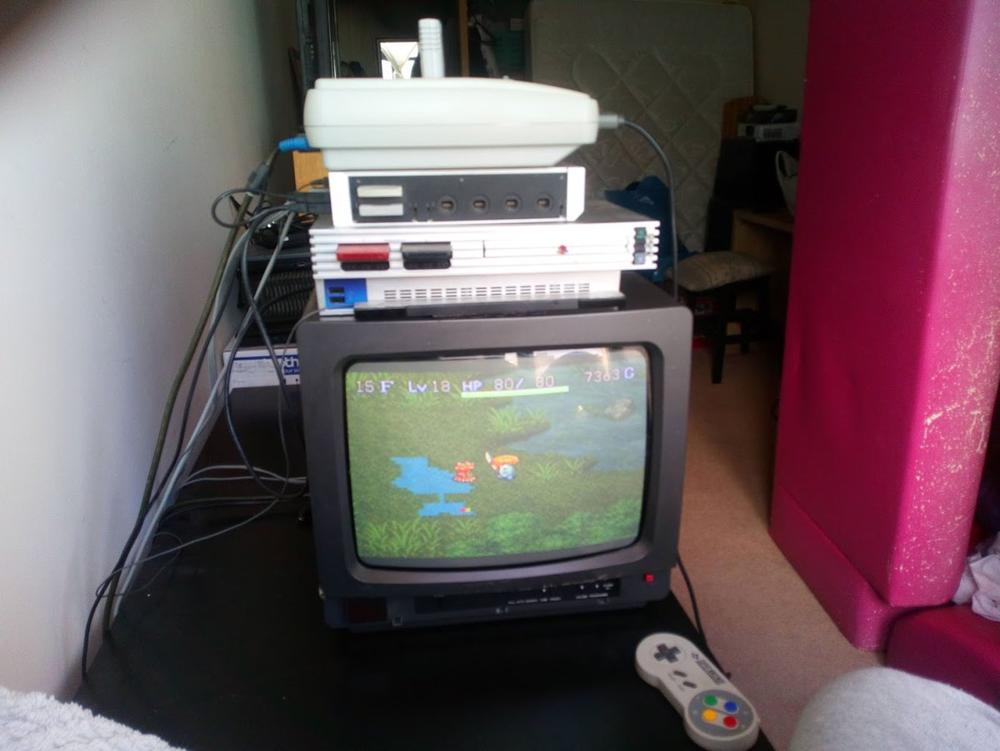
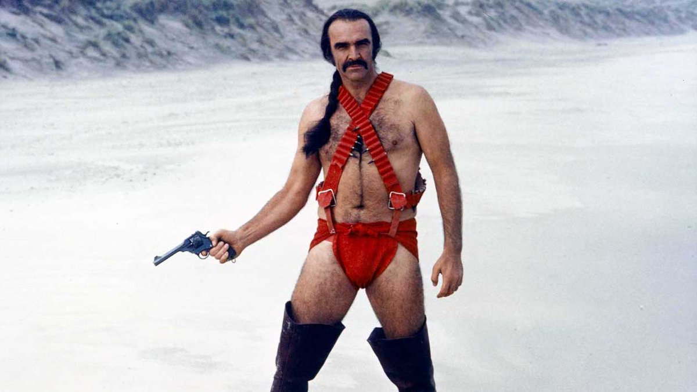
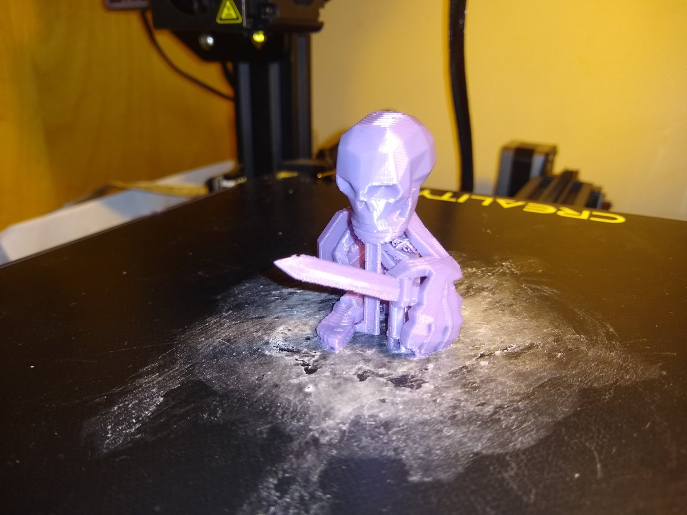
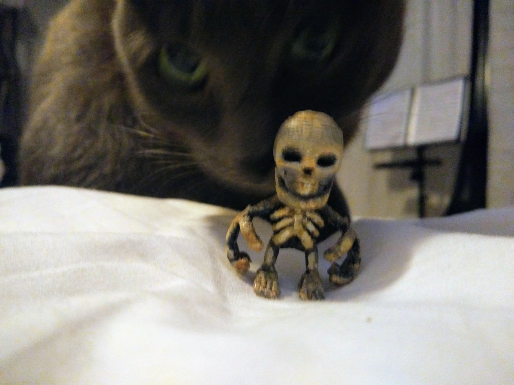

https://twitter.com/evilpaul_atebit/status/1326814375391490048 @evilpaul_atebit I was playing the music tape, but, I'd also managed to accidentally switch my dads HIFI to the radio...
It's like the eyes follow you around the room.
I must say that I am really looking forward to Total Landscaping replacing Gate as Americas goto political suffix.
A reminder that FBX is less of a file format and more of a stone turd abomination. https://twitter.com/NodrogMrDev/status/1324342935119343619
https://twitter.com/spleenal/status/1324389384989364224 @spleenal maybe overkill or not usable for you but you could do it easily with some shadertoy code? eg https://www.shadertoy.com/view/3d3Bz7 takes a video feed and quads it and is easily to tweak to 3x3 or whatevers. ( the *2.0 on line 7 )
Might even run on your phone :)
...
https://twitter.com/crowbarska/status/1323365215195594752 @crowbarska yup, one of the NPCs in town sets them, so it is "part of the game". The puzzles show some of the more esoteric rules and possibilities that you might miss without a bit of prompting. Even handing out a reward so it is worth completing them even if you know what you are doing.
https://twitter.com/crowbarska/status/1323027015444910085 @crowbarska there are still a few of the mystery dungeon games that have not made it to english but the first Shiren is my favorite, maybe the NDS version which is a little bit easier but mostly the same.
I usually point at the Shiren puzzle dungeons as the perfect way to do a tutorial.
https://twitter.com/crowbarska/status/1323021689853255681 @crowbarska by moonspeak I mean it's the original Japanese SNES cartridge so has the added difficulty of being in a language I do not understand...
I'm afraid thats just an old silver PS2 on a rather bright day. :)
https://twitter.com/crowbarska/status/1323013455645999107 @crowbarska Shiren is the bestist, I still have not quite finished the original in moonspeak but I'm getting there... 
Who wore it better? 
@johnmclear That's strange, by my calculations microsoft*node_modules should be nearer 1 Gb. :)
@ekoner You like the big creepy crawlies?
Have you tried Grounded?
https://www.epicgames.com/store/en-US/product/empires-of-the-undergrowth/home
This is rather nice and the perfect use for that 10quid epic token which is due to evaporate in a couple of days.
Mayhaps you would recognize it from its street name : Brown-Ray. https://twitter.com/OOCMesozoicLife/status/1321582452373159947
@magic_bane @ShroudofAvatar I talked shi into giving Ultima Online a go last month when I realized it had gone free to play.
Mostly to see what had changed in 20 years, if anything, and, well, I think shi is no longer letting me choose games to play together. :)
A boneman without a sword is like a harry without a hausen. 
Shi has been seeing what happens when you apply a spot of paint to Mr Boneman.
As you can see it has drawn the attention of his mortal enemy. 